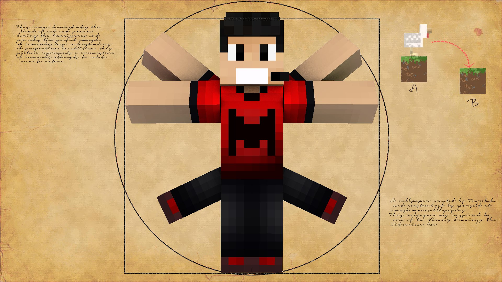
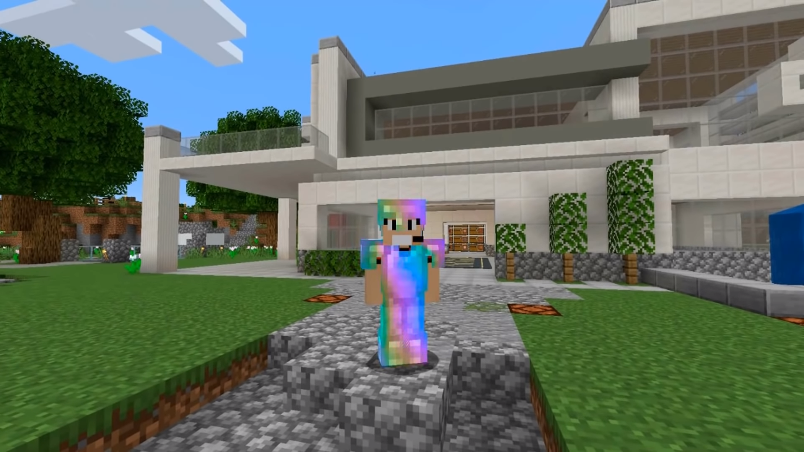

A origem
Paulo Viniccius Santos Ferraz , mais conhecido pelo seu nome virtual Viniccius13 , é um YouTuber e profissional do Minecraft brasileiro. Nasceu em 1993 no norte de Minas Gerais. É o criador e um dos apresentadores da série Em Busca da Casa Automática, além de ser um dos fundadores, junto com ForeverPlayer, da Redstone Gang, um grupo de jogadores profissionais de Minecraft que é conhecido principalmente pelo uso de redstone em suas construções.
O recanto
Em 4 de junho de 2013, Viníccius e seu amigo Davi começaram a série Em Busca da Casa Automática, que viria, anos mais tarde, a se tornar uma das séries de Minecraft mais conhecidas e renomadas do Brasil, principalmente pela grandiosidade e complexidade das construções que o mapa da série continha.
Os Amigos
Ainda no início da série, Viníccius anunciou, junto com Forever, a criação da hashtag #RedstoneGang, para ser usada como demonstração do carinho que fãs dos canais tinham pelo material. A hashtag logo se tornou na designação do grupo de YouTubers que seguiam os passos dos dois, e o grupo rapidamente cresceu.